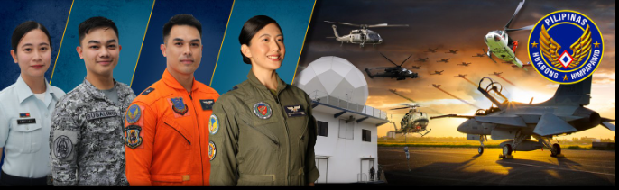

BE A MEMBER OF THE
PHILIPPINE AIR FORCE
Special Enlistment Qualifications and Requirement
Special Enlistment Qualifications and Requirement
PAF OFFICER CANDIDATE
Qualification for officer
Male or Female, natural born citizen of the Republic of the Philippines;
Single, never been married, never borne or sired a child and without legal obligation to support a child/children;
With the height of atleast 152.4cm(5feet) for both male and female
Must be physically and mentally fit for military training;
With good moral character;
At least 21 years old but not older than 27 years old upon admission on training (born between 27 Dec 1989 to 27 Dec 2003)
Must be a Baccalaureate Degree holder
initial Requirements
Fully accomplished PAF application form
2 pcs 2x2 latest ID picture with white background: Original, photocopy and scanned copy of the following documents:
PSA birth Certificate:
Valid AFPSAT IRF(for applicants who took AFPSAT at the Philippine Army and Philippine Navy)
Certificate from National Commision on Indigenous People(NCIP) duty signed by the Regional Director (for Indigenous applicants only)
PAF SPECIAL ENLISTMENT
Qualification for Special Enlistment
Male or Female, natural born citizen of the Republic of the Philippines;
Single, never been married, never borne or sired a child and without legal obligation to support a child/children;
With the height of atleast 152.4cm(5feet) for both male and female
Must be physically and mentally fit for military training;
With good moral character;
At least 18 years old but not older than 35 years old upon admission on training (born between 27 Dec 1989 to 27 Dec 2006)
atleast completed the K-12 basic education or has at least 72 units of collegiate course from an educational institution recognized by the government.
Must be a Baccalaureate Degree holder
initial Requirements
Fully accomplished PAF application form
2 pcs 2x2 latest ID picture with white background: Original, photocopy and scanned copy of the following documents:
Transcript of Record(TOR) and diploma
PSA birth Certificate:
Valid AFPSAT IRF(for applicants who took AFPSAT at the Philippine Army and Philippine Navy)
Certificate from National Commision on Indigenous People(NCIP) duty signed by the Regional Director (for Indigenous applicants only)